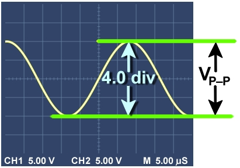
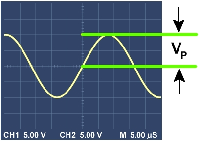
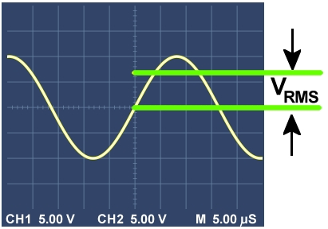
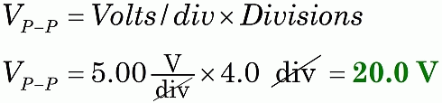
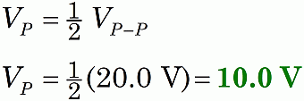
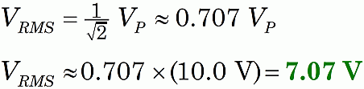

AC Voltage Measures
|  |
|
Figure 1. Count the divisions and calculate the peak-to-peak voltage. |
|  |
|
Figure 2. The value for VP
is simply half the peak-to-peak voltage. |
|  |
|
Figure 3. The value for VRMS is about 0.707 VP. |
Since AC signals vary like a sine wave, between positive and negative values, special methods are needed to define their voltage. You will encounter three main measures.
Peak-to-Peak Voltage, VP-P
The simplest measure is the peak-to-peak voltage: a measure of the full swing of values, from the smallest dip to the largest peak. With an oscilloscope trace, you can easily see and measure this.
In Figure 1, you can count 4.0 divisions between the top and bottom of the wave. This display is set to show 5.00 volts/div, so we can calculate the peak-to-peak voltage.

Peak Voltage, VP
A more useful value is the peak voltage: the maximum voltage value. Almost always the reference is zero volts—exactly half-way between the high and low values. So, the value of VP is simply ½ VP-P, as shown in Figure 2.

The value VP occurs in many applications, for example, calculating safe distances from high-voltage power lines.
RMS Voltage, VRMS
The most common way to measure and report AC voltage is known as VRMS, or RMS-voltage. Technically, VRMS is a mathematical result that depends on the shape of the curve, and will generally be slightly less than VP, as shown in Figure 3. In practical terms, for waves shaped like sine-waves, we can simply calculate VRMS from the value of VP.

Which of these three does your DMM report?
VRMS is the value most often reported by AC voltmeters and digital multimeters.
For inquiring minds, "RMS" stands for "root mean squared." VRMS is the result of 1) squaring the positive and negative AC values over one complete cycle, 2) calculating the average (or mean) of those values, and 3) taking the square root of that result. So, do you see where we get the three terms "root mean squared?"